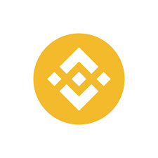
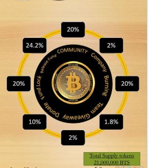

Experience the Next-Generation Crypto Exchange with Bitscoin! Trade,
Invest, and Soar .. Your Gateway to Expanding Crypto Horizons: Trade
with Confidence, Bitscoin Stake
Overview:Bitscoin (BTS) was initially launched on 2023-09-30 10:16:16, and tokenized
the idea with BEP-20 tokens on the Business Smart Chain. We have made
many benchmarks during the period of around one and a half years and then
decided that we will migrate the tokens into a new contract to create a more
robust, scalable, and
This whitepaper aims to introduce you to Bitscoin (BTS) and help you get a
comprehensive understanding of its features and the solutions it offers for
present-day problems in the crypto and blockchain industries. We are also
presenting our future roadmap and tokenomics in this whitepaper
2. Mission And Vision
Mission:
Empowering individuals with accessible, high-quality crypto education and services, fostering financial literacy,
and promoting innovation through our comprehensive BTS Academy ecosystem.
Vision:
To become the leading crypto education platform, bridging the knowledge gap and driving global adoption,
while creating a sustainable, community-driven ecosystem that rewards learning, innovation, and contribution.
3. Smart contract
Bitscoin is a cryptocurrency token built on the binance(BNB) blockchain.
The smart contract governs token creation, transfers, and approvals. It is written in Solidity and handles token management on-chain.
BENEFITS OF SMART CONTRACT
The benefits of the Bitscoin smart contract can be defined with the following key:
1. Transparency: All transactions and token operations are visible on the blockchain, ensuring accountability.
2. Automation & Efficiency: Predefined rules in the smart contract execute transactions autoBinanceally, reducing manual intervention and errors.
3. Cost-Effectiveness: Operating on the binance(BNB) blockchain ensures low transaction fees compared to other networks.
4. Security & Immutability: Once deployed, the smart contract cannot be altered, ensuring secure and tamper-proof transactions.
5. Decentralized Control: Removes the need for intermediaries, allowing peer-to-peer interactions directly between users.
Bitscoin (BTS)
POWERED BY

binance(BNB)
4. Core Values
1. Accessibility: Making crypto education available to all.
2. Quality: Delivering expert-led, engaging, and relevant content.
3. Innovation: Encouraging creativity and forward-thinking.
4. Community: Fostering collaboration, support, and recognition.
5. Transparency: Ensuring open communication and trust.
5. BTS Staking Academy Ecosystem
1.Staking Education: Courses, webinars, workshops, and tutorials on staking strategies and best practices.
2.Community Forum: Discussion, networking, and resource sharing centered around staking topics.
3.Token Rewards: Incentives for learning about staking, contributing to discussions, and participating in events.
4.Expert Mentorship: Personalized guidance and support for mastering staking concepts and techniques.
5.Resource Library: Access to curated articles, videos, and tools specifically related to staking.
6. Goals
1. Educate 1 million individuals in crypto fundamentals within 2 years.
2. Achieve 50% user engagement in community forums and discussions.
3. Develop strategic partnerships with 10+ industry leaders.
4. Launch 5+ new courses and programs annually.
5. Maintain 95% user satisfaction rating.
7. Governance
BTS Token's governance ensures decentralized decision-making, transparency, and community involvement, aligning with its mission to empower crypto education.
Governance Bodies
1. Council of Advisors: Expert advisors providing strategic guidance.
2. Token Holders' Assembly: BTS Token holders participate in decision-making.
3. Community Forum: Open discussion platform for users and stakeholders.
2. Voting systems: Proof-of-Stake (PoS) or Delegated Proof-of-Stake (DPoS).
8. Roles and Responsibilities
1.Council of Advisors:
- Strategic guidance.
- Proposal submission.
- Community engagement.
2. Token Holders' Assembly:
- Voting on proposals.
- Decision-making.
- Community representation.
3. Community Forum:
- Open discussion.
- Feedback mechanism.
- Idea incubation.
9. Transparency and Accountability
1. Regular updates on governance decisions.
2. Publicly accessible meeting minutes.
3. Auditable voting processes.
Dispute Resolution
1. Mediation: Council of Advisors.
2. Arbitration: Independent third-party service.
Amendments Bitscoin
1. Proposal submission.
2. Community discussion.
3. Voting.
This governance structure ensures decentralized decision-making, community involvement,
and transparency, fostering a healthy ecosystem for Bitscoin and BTS Academy.
1. Bitscoin Pay: Cryptocurrency payment gateway for merchants and individuals.
2. Bitscoin Trade Signal: AI-driven trading signals for cryptocurrency investors.
11. Infrastructure Development
Bitscoin Utility:
1. Education Fees: Pay course fees with Bitscoin.
2. Trading Fees: Discounted trading fees on Bitscoin Trade Signal.
3. Payment Processing: Low transaction fees on Bitscoin Pay.
4. Property Investment: Exclusive access to Bitscoin Construction projects.
5. Voting Rights: Participate in governance decisions.
1. BTS Construction: Blockchain-based real estate development and property management.
Community & Governance:
1. BTS Forum: Community discussion platform for users, stakeholders, and token holders.
2. BTS Governance: Decentralized decision-making system for token holders.
Partnerships & Collaborations:
1. Strategic partnerships with industry leaders.
2. Collaborations with educational institutions.
Revenue Streams:
1. Staking no fees (BTS Staking Academy).
2. Trading fees (BTS Trade Signal).
3. Payment processing fees (Bitscoin Pay).
4. Property development revenue (BTS Construction).
5. Bitscoin sales.
This comprehensive ecosystem supports the growth and adoption of BTS Token,
fostering a robust and interconnected network of services.
12. Tokenomics
BTS tokenomics have been meticulously crafted to embody our ethos of empowerment and accessibility:
Total supply:21000000 BTS
BTS Burn: 73 BTS
Remaining supply: 20999933 BTS

13. Risk Factors
1. Smart contract security
The security of Bitscoin must be the highest priority beginning at the time of its deployment. Users should investigate risks involved with Bitscoin before engaging with it. There is an inherent risk that Bitscoin could contain vulnerabilities or bugs causing, among other things, the complete failure of Bitscoin and/or its parts.
2.binance(BNB) chain technical risk
Bitscoin onbinance(BNB) is built on top of experimental technology under active development. There is no guarantee that the Binance network would be error-free or have a minimum uptime. Failures in Binance might lead to validators slashing and result in a significant drop in the balance and price of the staked Bitscoin.
3. Bitscoin price risk
Besides the risk associated with validators' slashing and an Bitscoin
token balance drop, there is a chance that the exchange price of Bitscoin.
14. Conclusion
The BTS Token project represents a revolutionary leap forward in the world of
cryptocurrency and blockchain technology. By providing a secure, decentralized, and scalable platform for crypto trading and investing, BTS Token is poised to empower individuals and institutions alike to
navigate the digital asset landscape with confidence.
With its cutting-edge features, expert-driven education, and community-focused approach, BTS Token is dedicated to
democratizing access to the crypto market and fostering a culture of financial freedom.
Join us on this groundbreaking journey, and together, let's shape the future of cryptocurrency trading and investing.